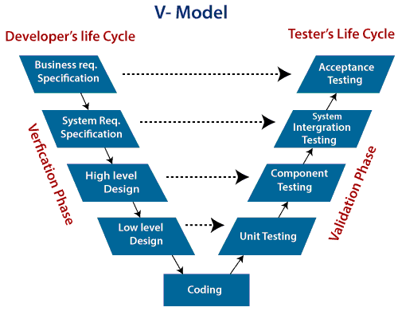

V-Model ehk V-kujuline arendusmudel on lineaarne ja järjestikune arendusprotsess, mis rõhutab nii verifitseerimist kui valideerimist igas etapis. Mudel kujutab arendusprotsessi V-kujulise graafikuna, kus iga arendusetapiga on seotud vastav testimise etapp.
Kogutakse ja analüüsitakse süsteemi ja tarkvara nõudeid, et mõista kliendi ootusi. See faas loob aluse aktsepteerimistestidele.
Luua terviklik süsteemidisain, mis hõlmab funktsionaalseid ja mittefunktsionaalseid nõudeid. Tulemusi kasutatakse süsteemitestide kavandamisel.
Koostatakse kõrgetasemeline disain (High-Level Design - HLD), mis määratleb süsteemi põhikomponendid ja nende omavahelised suhted.
Luua detailne madala taseme disain (Low-Level Design - LLD), mis määratleb iga mooduli täpsed funktsioonid ja loogika. Seda kasutatakse üksustestimise kavandamiseks.
Süsteem programmeeritakse ja dokumenteeritakse. Iga moodul arendatakse vastavalt detailsetele disainijuhistele.
Iga moodulit testitakse eraldi, et kontrollida, kas see vastab madala taseme disaini spetsifikatsioonidele.
Moodulid ühendatakse ja testitakse, et veenduda, et nad töötavad koos ja vastavad arhitektuurse disaini nõuetele.
Kogu süsteemi testimine, et kinnitada, et kõik funktsionaalsed ja mittefunktsionaalsed nõuded on täidetud.
Veendutakse, et lõplik toode vastab kliendi ootustele ja on valmis kasutamiseks.

| Head | Vead |
|---|---|
| Varane vigade avastamine ja parandamine | Ei sobi hästi paindlike ja muutuvate nõuetega projektidele |
| Iga etapi selge struktuur | Testimine algab alles pärast kodeerimise lõppu |
| Rõhutab kvaliteedikontrolli igal etapil | Kõrgemad kulud võrreldes paindlikumate mudelitega |